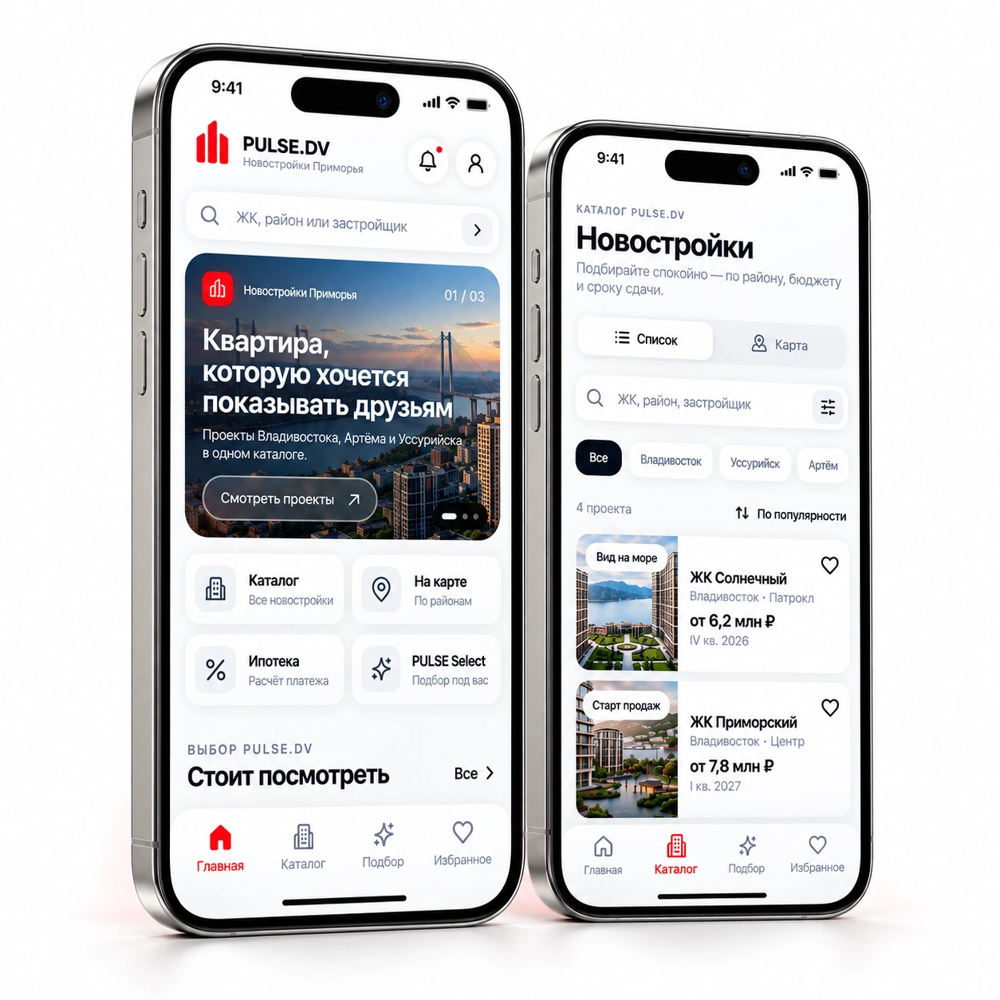

НовостройкиПриморья —в одном приложении.
Сравнивайте ЖК и квартиры, изучайте цены, сохраняйте варианты и выбирайте самостоятельно.
- Актуальные
новостройки - Ваши
избранные - Удобное
сравнение
Ближе к вашему завтра

Сравнивайте ЖК и квартиры, изучайте цены, сохраняйте варианты и выбирайте самостоятельно.
Ближе к вашему завтра
